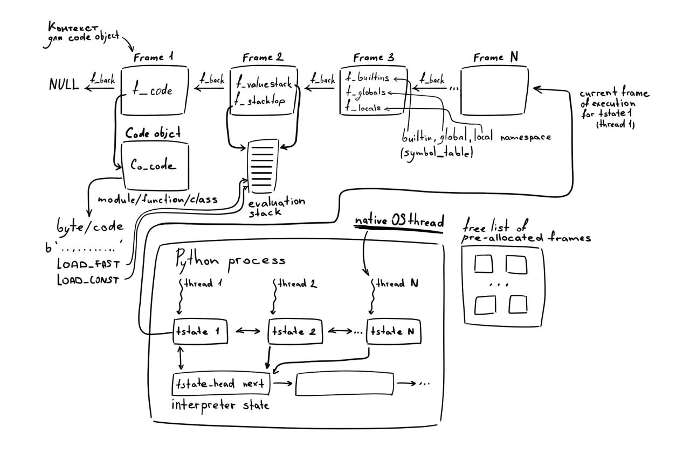

Функции
Когда речь заходит о функциях, то вспоминают математичекое определение:
Функция это соответствие между двумя множествами, такое, что каждому элементу первого множества соответствует один и только один элемент второго множества.
В программировании под функцией обычно понимают именованый блок кода (хотя функции могут быть и анонимными), который выполняет некоторую задачу и может быть переиспользован множество раз. К математическому описанию функции близки, так называемые, чистые функции, то есть, функции с детерминированным поведением и без побочных эффектов.
Пример поиска минимального элемента
Давайте начнем с простого примера, напишем функцию возвращающую минимум от двух аргументов:
def my_min(a: float, b: float) -> float:
""" Function to get minimum of two arguments
Returns:
--------
The smallest argument.
Examples:
---------
>>> my_min(0, 1)
0
"""
return a if a < b else b
Аргументы или параметры
Формальным параметром функции называется перменная, которая будет связана с переданным в функцию значением. Аргументом функции называется переменная (или выражение), значение которой используется при вызове функции:
def my_min(a, b)
^ ^
параметры функции
a, b = 1, 2
my_min(a, b)
^ ^
аргументы функции
Обычно аргументы и параметры называют просто аргументами.
Докстроки
В тройных кавычках записывается строка документации (docstring), в которой описывается назначение функции (класса, модуля), список аргументов, возвращаемое значение, примеры использования функции и т.д. Примеры обычно записываются в виде документированных тестов (doctest), которые можно запустить с помощью модуля doctest. Есть различные соглашения по оформелнию строк документации, но единого правила нет. Существует несколько проектов предназначенных для автоматической генерации документации на основе докстрок, например, Sphinx.
Аннотации функций
Аннотации типов (или подсказки типов) в основном предназначены для сообщения о том, какими типами обладают аргументы в функциях и методах. Есть несколько популярных «тайпчекеров», среди которых наиболее популярны mypy и pyre. За информацией по аннотированию типов и функций можно обратиться к PEP-3107 и PEP-484.
Список инструкций, которые будут выполнены при вызове функции, также достаточно простой, на стек помещаются два значения, выполняется операция сравнения и, в зависимости от результата, возвращается значение a или b:
>>> dis.dis(my_min)
13 0 LOAD_FAST 0 (a)
2 LOAD_FAST 1 (b)
4 COMPARE_OP 0 (<)
6 POP_JUMP_IF_FALSE 12
8 LOAD_FAST 0 (a)
10 RETURN_VALUE
>> 12 LOAD_FAST 1 (b)
14 RETURN_VALUE
При вызове функции мы можем передать наши аргументы как позиционные, в таком случае важен порядок следования аргументов (хотя не для нашей функции my_min):
>>> my_min(2, 1)
1
>>> my_min(1, 2)
1
>>> dis.dis("my_min(1, 2)")
1 0 LOAD_NAME 0 (my_min)
2 LOAD_CONST 0 (1)
4 LOAD_CONST 1 (2)
6 CALL_FUNCTION 2
8 RETURN_VALUE
Также мы можем передать аргументы как именованные, в этом случае не имеет значения в каком порядке мы их указываем:
>>> my_min(a=2, b=1)
1
>>> my_min(b=2, a=1)
1
>>> dis.dis("my_min(b=1, a=2)")
1 0 LOAD_NAME 0 (my_min)
2 LOAD_CONST 0 (1)
4 LOAD_CONST 1 (2)
6 LOAD_CONST 2 (('b', 'a'))
8 CALL_FUNCTION_KW 2
10 RETURN_VALUE
И, наконец, мы можем использовать смешанный вариант передачи аргументов:
>>> my_min(2, b=1)
1
>>> dis.dis("my_min(2, b=1)")
1 0 LOAD_NAME 0 (my_min)
2 LOAD_CONST 0 (2)
4 LOAD_CONST 1 (1)
6 LOAD_CONST 2 (('b',))
8 CALL_FUNCTION_KW 2
10 RETURN_VALUE
Вне зависимости от того как мы осуществляем вызов функции, все аргументы являются обязательными для передачи в функцию. Давайте немного усложним пример добавив еще один аргумент, таким образом, мы будем искать минимальное среди трех аргументов:
def my_min(a: float, b: float, c: float) -> float:
if a <= b and a <= c:
return a
elif b <= a and b <= c:
return b
else:
return c
Мы можем обобщить нашу функцию на список значений:
from typing import List
def my_min(values: List[float]) -> float:
result = float('inf')
for v in values:
if v < result:
result = v
return result
или на произвольное число позиционных аргументов с помощью оператора * (для переменного числа именованных аргументов используется **):
def my_min(*values: float) -> float:
result = float('inf')
for v in values:
if v < result:
result = v
return result
Сейчас мы можем вызвать функцию my_min без аргументов (в таком случае результатом работы функции будет «плюс» бесконечность), если же мы хотим, чтобы в нее был передан хотя бы один обязательный аргумент, то мы должны это явно указать:
def my_min(x: float, *values: float) -> float:
result = x
for v in values:
if v < result:
result = v
return result
Давайте еще немного усложним нашу функцию, добавив нижнюю и верхнюю границы, которые задают диапазон для поиска минимального:
def my_min(x: float, *values: float, lower: float=float('-inf'), upper: float=float('inf')) -> float:
""" Function to get the smallest number.
Parameters:
-----------
x: float
Required numeric value.
values: float, optional
Variable length argument list of numeric values.
lower: float, optional
Lower bound. The default lower bound is negative infinity.
upper: float, optional
Upper bound. The default upper bound is positive infinity.
Returns:
--------
The smallest value.
Examples:
---------
>>> my_min(-1, 0, 1, 2, 3)
-1
>>> my_min(-1, 0, 1, 2, 3, lower=0)
0
>>> my_min(-1, 0, 1, 2, 3, lower=4, upper=5)
>>> my_min(-1, 0, 1, 2, 3, lower=3, upper=-1)
Traceback (most recent call last):
...
Exception: `lower` must be less or equal to `upper`
"""
if lower > upper:
raise ValueError(f'`lower={lower}` must be less or equal to `upper={upper}`')
result = x if lower <= x <= upper else None
for v in values:
if (lower <= v <= upper) and (result is None or v < result):
result = v
return result
Обратите внимание, что если у аргументов lower и upper не указать значения по умолчанию, то в Python 3, эти аргументы будут обязательными для передачи в функцию:
>>> def my_min(x, *values, lower, upper):
... # ...
>>> my_min(5, 1, 0, 3)
...
TypeError: my_min() missing 2 required keyword-only arguments: 'lower' and 'upper'
Мы можем обязать пользователя передавать только именованные аргументы, указав * перед списком аргументов (пример взят из статьи Trey Hunner’а):
from random import choice, shuffle
import string
def random_password(*, upper: int, lower: int, digits: int, length: int) -> str:
"""
>>> random_password(upper=1, lower=1, digits=1, length=8)
'ooM2yCFc'
>>> random_password(upper=1, lower=1, digits=1, length=8)
'HeCr68ct'
>>> random_password(1, 1, 1, 8)
Traceback (most recent call last):
...
TypeError: random_password() takes 0 positional arguments but 4 were given
"""
chars = [
*(choice(string.ascii_uppercase) for _ in range(upper)),
*(choice(string.ascii_lowercase) for _ in range(lower)),
*(choice(string.digits) for _ in range(digits)),
*(choice(string.ascii_letters + string.digits) for _ in range(length-upper-lower-digits)),
]
shuffle(chars)
return "".join(chars)
Как создаются функции
Давайте перечислим шаги, которые описывают как в CPython исходный код преобразуется в байткод:
- Код переводится в лексемы
- Лексемы переводятся в AST (Abstract Syntax Tree, абстрактное синтаксическое деерво)
- AST переводится в CFG (Control-flow Graph, граф потока управления)
- CFG переводится в байткод.
Байткод представлен специальными объектами кода (code objects):
/* Bytecode object */
struct PyCodeObject {
PyObject_HEAD
int co_argcount; /* #arguments, except *args */
int co_posonlyargcount; /* #positional only arguments */
int co_kwonlyargcount; /* #keyword only arguments */
int co_nlocals; /* #local variables */
int co_stacksize; /* #entries needed for evaluation stack */
int co_flags; /* CO_..., see below */
int co_firstlineno; /* first source line number */
PyObject *co_code; /* instruction opcodes */
PyObject *co_consts; /* list (constants used) */
PyObject *co_names; /* list of strings (names used) */
PyObject *co_varnames; /* tuple of strings (local variable names) */
PyObject *co_freevars; /* tuple of strings (free variable names) */
PyObject *co_cellvars; /* tuple of strings (cell variable names) */
// ...
};
Объект кода можно создать с помощью встроенной функции compile:
>>> co = compile("x + 1", "<string>", "eval")
>>> co.co_names
('x',)
>>> co.co_consts
(1,)
>>> co.co_code
b'e\x00d\x00\x17\x00S\x00'
>>> import dis
>>> dis.dis(co)
1 0 LOAD_NAME 0 (x)
2 LOAD_CONST 0 (1)
4 BINARY_ADD
6 RETURN_VALUE
Мы уже говорили, что байткод выполняется виртуальной машиной CPython, но для его выполнения нужен контекст, например, в примере выше инструкция LOAD_CONST помещает значение константы на стек данных, но объект кода ничего не знает про стек. Объекты кода также не содержат информации о состояни и интерпретатора или потока, в котором они выполняются. Таким образом, для выполнения объектов кода требуется еще одна структура, которая будет предоставлять соответствующий контекст, такой структурой является фрейм (frame object, он же стек фрейм):
struct _frame {
PyObject_VAR_HEAD
struct _frame *f_back; /* previous frame, or NULL */
PyCodeObject *f_code; /* code segment */
PyObject *f_builtins; /* builtin symbol table (PyDictObject) */
PyObject *f_globals; /* global symbol table (PyDictObject) */
PyObject *f_locals; /* local symbol table (any mapping) */
PyObject **f_valuestack; /* points after the last local */
PyObject *f_trace; /* Trace function */
int f_stackdepth; /* Depth of value stack */
char f_trace_lines; /* Emit per-line trace events? */
char f_trace_opcodes; /* Emit per-opcode trace events? */
/* Borrowed reference to a generator, or NULL */
PyObject *f_gen;
int f_lasti; /* Last instruction if called */
/* Call PyFrame_GetLineNumber() instead of reading this field
directly. As of 2.3 f_lineno is only valid when tracing is
active (i.e. when f_trace is set). At other times we use
PyCode_Addr2Line to calculate the line from the current
bytecode index. */
int f_lineno; /* Current line number */
int f_iblock; /* index in f_blockstack */
PyFrameState f_state; /* What state the frame is in */
PyTryBlock f_blockstack[CO_MAXBLOCKS]; /* for try and loop blocks */
PyObject *f_localsplus[1]; /* locals+stack, dynamically sized */
};
import sys
def f():
caller = sys._getframe(1).f_code.co_name
print(f"f() was called by '{caller}'")
def h():
f()
>>> h()
f() was called by 'h'
>>> f()
f() was called by '<module>'

Атрибуты функций
Как мы уже говорили, все является объектом, включая функции. Функции представлены структурой PyFunctionObject:
typedef struct {
PyObject_HEAD
PyObject *func_code; /* A code object, the __code__ attribute */
PyObject *func_globals; /* A dictionary (other mappings won't do) */
PyObject *func_defaults; /* NULL or a tuple */
PyObject *func_kwdefaults; /* NULL or a dict */
PyObject *func_closure; /* NULL or a tuple of cell objects */
PyObject *func_doc; /* The __doc__ attribute, can be anything */
PyObject *func_name; /* The __name__ attribute, a string object */
PyObject *func_dict; /* The __dict__ attribute, a dict or NULL */
PyObject *func_weakreflist; /* List of weak references */
PyObject *func_module; /* The __module__ attribute, can be anything */
PyObject *func_annotations; /* Annotations, a dict or NULL */
PyObject *func_qualname; /* The qualified name */
vectorcallfunc vectorcall;
/* Invariant:
* func_closure contains the bindings for func_code->co_freevars, so
* PyTuple_Size(func_closure) == PyCode_GetNumFree(func_code)
* (func_closure may be NULL if PyCode_GetNumFree(func_code) == 0).
*/
} PyFunctionObject;
Давайте разберемся с полями этой структуры.
Поле func_code (__code__) хранит ссылку на структуру PyCodeObject («объект кода»), которая в свою очередь содержит инструкции для виртуальной машины Python, число аргументов, сами аргументы и т.д. Более подробно мы остановимся на этой структуре в одной из следующих лекций.
def square(x): return x**2
>>> dis.dis(square)
1 0 LOAD_FAST 0 (x)
2 LOAD_CONST 1 (2)
4 BINARY_POWER
6 RETURN_VALUE
>>> square.__code__.co_code
b'|\x00d\x01\x13\x00S\x00'
>>> list(square.__code__.co_code)
[124, 0, 100, 1, 19, 0, 83, 0]
Список опкодов можно найти в файле Include/opcode.h:
// ...
#define BINARY_POWER 19
// ...
#define RETURN_VALUE 83
// ...
#define LOAD_CONST 100
// ...
#define LOAD_FAST 124
func_globals
https://punchagan.muse-amuse.in/blog/python-globals/
Quote
Every function has an associated globals dictionary, which is the same as the module’s dict for the module where it was defined. This globals dict is the name-space that is looked up when trying to fetch globals within a function.
>>> square.__globals__
{'__annotations__': {},
'__builtins__': <module 'builtins' (built-in)>,
'__doc__': None,
'__loader__': <class '_frozen_importlib.BuiltinImporter'>,
'__name__': '__main__',
'__package__': None,
'__spec__': None,
'square': <function square at 0x1060a50d0>}
Поля func_defaults (__defaults__) и func_kwdefaults (__kwdefaults__) содержат значения по умолчанию для позиционных и ключевых аргументов, соответственно:
>>> my_min.__kwdefaults__
{'lower': -inf, 'upper': inf}
Важно отметить, что поля __defaults__ и __kwdefaults__ являются изменяемыми и инициализируются один раз при создании функции. Рассмотрим два примера:
def buggy_append(value, L=[]):
L.append(value)
return L
>>> buggy_append.__defaults__
([],)
>>> buggy_append(1)
[1]
>>> buggy_append(2)
[1, 2]
>>> buggy_append.__defaults__
([1, 2],)
>>> buggy_append.__defaults__[0].append(3)
>>> buggy_append(4)
[1, 2, 3, 4]
def square(*, x):
return x * x
>>> square()
...
TypeError: foo() missing 1 required keyword-only argument: 'x'
>>> square.__kwdefaults__ = {'x': 5}
>>> square()
25
Поле __closure__ содержит кортеж значений, а именно ячеек (cell objects), необходимых функции, но находящихся в объемлющем пространстве имен. Давайте рассмотрим следующий пример:
def curry_pow(base=1):
def power(x):
return base**x
return power
>>> pow2 = curry_pow2(2)
>>> pow2(3)
8
Note
Приведенный пример иллюстрирует каррирование, то есть процесс, при котором функция от нескольких аргументов преобразуется в функцию (или набор функций) от одного аргумента.
>>> pow2.__closure__
(<cell at ...: int object at ...>,)
>>> pow2.__closure__[0].cell_contents
2
>>> dis.dis(curry_pow)
2 0 LOAD_CLOSURE 0 (base)
2 BUILD_TUPLE 1
4 LOAD_CONST 1 (<code object power at 0x10a5e0810 ...>)
6 LOAD_CONST 2 ('curry_pow.<locals>.power')
8 MAKE_FUNCTION 8
10 STORE_FAST 1 (power)
4 12 LOAD_FAST 1 (power)
14 RETURN_VALUE
Disassembly of <code object power at 0x10a5e0810 ...>:
3 0 LOAD_DEREF 0 (base)
2 LOAD_FAST 0 (x)
4 BINARY_POWER
6 RETURN_VALUE
Поле func_doc (__doc__), как вы уже могли догадаться, содержит строку документации:
>>> my_min.__doc__
' Function to get the smallest number.\n...'
Поле func_name (__name__) является изменяемым и содержит имя функции. Значение этого атрибута обычно используется такими модулями как pydoc для генерирования документации:
>>> square.__name__
'square'
>>> help(square)
Help on function square...
>>> square.__name__ = 'cube'
>>> help(square)
Help on function cube...
Необходимость в возможности изменения этого атрибута станет очевидной, когда мы будем говорить о декораторах, но мы всегда можем получить исходное имя функции через неизменяемый атрибут co_name у объекта кода:
>>> square.__code__.co_name
'square'
Поле func_dict (__dict__) содержит ссылку на словарь с произвольными (пользовательскими) атрибутами (см. PEP 232 - Function Attributes).
>>> square.__dict__
{}
>>> sqaure.ru_doc = 'Функция возведения значния аргумента в квадрат'
>>> square.__dict__
{'ru_doc': 'Функция возведения значния аргумента в квадрат'}
Поле func_weakreflist содержит список, так назыаемых, слабых ссылок, о которых мы будем говорить в одной из следующих лекций.
Поле func_module (__module__) это имя модуля, в котором была определена функция:
>>> globals()['__name__']
'__main__'
>>> sqaure.__module__
'__main__'
>>> globals()['__name__'] = '__secondary__'
>>> def cube(x): return x**3
>>> cube.__module__
'__secondary__'
Поле func_annotations (__annotations__) содержит аннотации и зачастую используется статистическими анализаторами кода, такими как mypy или pyre:
>>> my_min.__annotations__
{
'x': <class 'float'>,
'values': <class 'float'>,
'lower': <class 'float'>,
'upper': <class 'float'>,
'return': <class 'float'>
}
Поле func_qualname (__qualname__) содержит «расширенное» имя функции или класса и используется для интроспекции (см. PEP 3155):
class A:
class B:
def d(self):
pass
>>> A.B.d.__name__
'd'
>>> A.B.d.__qualname__
'A.B.d'
Вызов функций
Концепция callable-объекта является фундаментальной в Python. Когда мы думаем о том, что может быть «вызвано» (called), то первое, что приходит на ум, это функции. Но кроме функций есть еще методы и классы, а также любой объект, в типе которого определен магический метод __call__:
class Joke:
def __call__(self):
return 'That what she said'
>>> joke = Joke()
>>> joke()
'That what she said'
В этом примере мы «вызываем» класс Joke для инстанцирования нового объекта, а затем осуществляем «вызов» экземпляра класса как если бы это была обычная функция (о классах мы будем говорить в лекции «ООП. Классы»).
Можно сказать, что наличие (arg1, arg2,...) указывает на то, что происходит «вызов» и, в большинстве случаев, генерируется опкод CALL_FUNCTION (вызов callable-объекта с позиционными аргументами):
>>> import dis
>>> dis.dis("add(1,2)")
1 0 LOAD_NAME 0 (add)
2 LOAD_CONST 0 (1)
4 LOAD_CONST 1 (2)
6 CALL_FUNCTION 2
8 RETURN_VALUE
Вот описание опкода из документации:
CALL_FUNCTION(argc)
Calls a callable object with positional arguments. argc indicates the number of positional arguments. The top of the stack contains positional arguments, with the right-most argument on top. Below the arguments is a callable object to call. CALL_FUNCTION pops all arguments and the callable object off the stack, calls the callable object with those arguments, and pushes the return value returned by the callable object.
Давайте кратко рассмотрим обработчик опкода CALL_FUNCTION:
case TARGET(CALL_FUNCTION): {
PREDICTED(CALL_FUNCTION);
PyObject **sp, *res;
sp = stack_pointer;
res = call_function(tstate, &sp, oparg, NULL);
stack_pointer = sp;
PUSH(res);
if (res == NULL) {
goto error;
}
DISPATCH();
}
Фактически происходит вызов функции call_function, куда передается адрес вершины стека sp и число позиционных аргументов oparg:
(gdb) p *(sp-1)
$1 = 2
(gdb) p *(sp-2)
$2 = 1
(gdb) p *(sp-3)
$3 = <function at remote 0x1014597d0>
(gdb) p ((PyFunctionObject*)(*(sp-3)))->func_name
$4 = 'add'
(gdb) p oparg
$5 = 2
Note
https://www.ics.uci.edu/~pattis/common/handouts/macmingweclipse/allexperimental/mac-gdb-install.html
call_function является общей для вызова функций, методов, классов и других объектов:
Py_LOCAL_INLINE(PyObject *) _Py_HOT_FUNCTION
call_function(PyThreadState *tstate, PyObject ***pp_stack, Py_ssize_t oparg, PyObject *kwnames)
{
PyObject **pfunc = (*pp_stack) - oparg - 1;
PyObject *func = *pfunc;
PyObject *x, *w;
Py_ssize_t nkwargs = (kwnames == NULL) ? 0 : PyTuple_GET_SIZE(kwnames);
Py_ssize_t nargs = oparg - nkwargs;
PyObject **stack = (*pp_stack) - nargs - nkwargs;
if (tstate->use_tracing) {
x = trace_call_function(tstate, func, stack, nargs, kwnames);
}
else {
x = _PyObject_Vectorcall(func, stack, nargs | PY_VECTORCALL_ARGUMENTS_OFFSET, kwnames);
}
// ...
return x;
}
Происходит подготовка аргументов для вызова функции _PyObject_Vectorcall, где nargs и nkwargs указывает на число позиционных и именованных аргументов, соответственно, nkwargs представляет собой кортеж с именами ключевых аргументов (см. опкод CALL_FUNCTION_KW), stack указывает на первый аргумент функции, а func указывает на объект PyFunctionObject (нашу функцию add):
(gdb) p nargs
$6 = 2
(gdb) p nkwargs
$7 = 0
(gdb) p kwnames
$8 = 0x0
(gdb) p *stack
$9 = 1
(gdb) p *(stack+1)
$10 = 2
(gdb) p *(stack-1)
$11 = <function at remote 0x1014597d0>
(gdb) p func
$12 = <function at remote 0x1014597d0>
(gdb) p ((PyFunctionObject*)0x1014597d0)->func_name
$13 = 'add'
static inline PyObject *
_PyObject_Vectorcall(PyObject *callable, PyObject *const *args,
size_t nargsf, PyObject *kwnames)
{
PyObject *res;
vectorcallfunc func;
// ...
func = _PyVectorcall_Function(callable);
if (func == NULL) {
Py_ssize_t nargs = PyVectorcall_NARGS(nargsf);
return _PyObject_MakeTpCall(callable, args, nargs, kwnames);
}
res = func(callable, args, nargsf, kwnames);
return _Py_CheckFunctionResult(callable, res, NULL);
}
В функции _PyObject_Vectorcall проверяется поддерживает ли callable-объект новый протокол Vectorcall, который был введен в PEP 590 с целью оптимизации вызова callable-объектов:
Quote
The poor performance is largely a result of having to create intermediate tuples, and possibly intermediate dicts, during the call. This is mitigated in CPython by including special-case code to speed up calls to Python and builtin functions. Unfortunately, this means that other callables such as classes and third party extension objects are called using the slower, more general tp_call calling convention.
This PEP proposes that the calling convention used internally for Python and builtin functions is generalized and published so that all calls can benefit from better performance...
Отметим, что все пользовательские функции, начиная с Python 3.8, поддерживают протокол Vectorcall. Возможно, вы обратили внимание, что последнем полем структуры PyFunctionObject является vectorcall типа vectorcallfunc:
typedef PyObject *(*vectorcallfunc)(PyObject *callable, PyObject *const *args,
size_t nargsf, PyObject *kwnames);
Это поле инициализируется при создании новой функции (см. опкод MAKE_FUNCTION):
PyObject *
PyFunction_NewWithQualName(PyObject *code, PyObject *globals, PyObject *qualname)
{
PyFunctionObject *op;
// ...
op = PyObject_GC_New(PyFunctionObject, &PyFunction_Type);
// ...
op->vectorcall = _PyFunction_Vectorcall;
// ...
return (PyObject *)op;
}
Таким образом, вызов:
res = func(callable, args, nargsf, kwnames);
эквивалентен вызову:
res = _PyFunction_Vectorcall(callable, args, nargsf, kwnames);
Наконец перейдем к _PyFunction_Vectorcall:
PyObject *
_PyFunction_Vectorcall(PyObject *func, PyObject* const* stack,
size_t nargsf, PyObject *kwnames)
{
PyCodeObject *co = (PyCodeObject *)PyFunction_GET_CODE(func);
// ...
return _PyEval_EvalCodeWithName((PyObject*)co, globals, (PyObject *)NULL,
stack, nargs,
nkwargs ? _PyTuple_ITEMS(kwnames) : NULL,
stack + nargs,
nkwargs, 1,
d, (int)nd, kwdefs,
closure, name, qualname);
}
Отметим лишь два момента, первый, это получение объекта кода, о котором мы говорили ранее, и второе, создание и исполнение (evaluation) нового фрейма (о фреймах мы будем говорить в одной из следующих лекций) с телом нашей функции.
Декораторы
Note
A decorator is any callable Python object that is used to modify a function, method or class definition. A decorator is passed the original object being defined and returns a modified object, which is then bound to the name in the definition.
def logtime(func):
def wrapper(*args, **kwargs):
start_time = time.time()
result = func(*args, **kwargs)
total_time = time.time() - start_time
with open("timelog.txt", "a") as outfile:
outfile.write(f"{time.time()}\t{func.__name}\t{total_time}\n")
return result
return wrapper
def accepts(*types):
def check_accepts(f):
assert len(types) == f.func_code.co_argcount
def new_f(*args, **kwds):
for (a, t) in zip(args, types):
assert isinstance(a, t), \
"arg %r does not match %s" % (a,t)
return f(*args, **kwds)
new_f.func_name = f.func_name
return new_f
return check_accepts
def returns(rtype):
def check_returns(f):
def new_f(*args, **kwds):
result = f(*args, **kwds)
assert isinstance(result, rtype), \
"return value %r does not match %s" % (result,rtype)
return result
new_f.func_name = f.func_name
return new_f
return check_returns